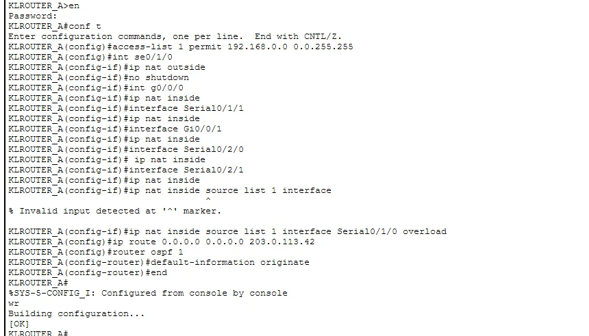

Internal networks use private addresses, which cannot be routed on the internet. The router at the edge has to translate them, and ideally there should be a second exit if the first one fails. In my assignment's headquarters I built exactly that: one primary router doing NAT overload (PAT), and a second router acting as a backup using a floating static route. This article covers both and the test results, including the ones that were not perfect.
The design
Two routers at the HQ each had a link to the ISP. Router A was the primary exit. Router B was the backup. Both connected to the core switches over their own /30 links and ran OSPF with them. The ISP router had a loopback address, 9.9.9.9, which I used as a stand-in for "the internet" to ping.
PAT on the primary router
NAT overload lets many private hosts share one public address by using different port numbers. You need four things: an access list for which addresses may be translated, an inside and outside marking on the interfaces, the translation rule itself, and a default route.
access-list 1 permit 192.168.0.0 0.0.255.255
!
interface serial0/1/0
ip nat outside
interface gigabitEthernet0/0/1
ip nat inside
!
ip nat inside source list 1 interface serial0/1/0 overload
ip route 0.0.0.0 0.0.0.0 203.0.113.42
router ospf 1
default-information originate
You can see in the screenshot that one of my first ip nat inside source attempts was rejected with "Invalid input detected". I had left off the interface name. Once I wrote it as interface Serial0/1/0 overload, it was accepted. The last line, default-information originate, advertises the default route into OSPF so that every other router sends internet traffic here.
The backup: a floating static route
A floating static route is an ordinary static route with a deliberately high administrative distance. Static routes normally have a distance of 1, and OSPF routes have 110. If I give the backup default route a distance of 250, the router ignores it as long as the OSPF default route from the primary router exists. When that disappears, the static route "floats" up and starts being used.
ip route 0.0.0.0 0.0.0.0 203.0.113.46 250The backup router also had NAT overload configured on its own ISP link, otherwise the traffic would leave with private source addresses and never come back.
Return routes on the ISP side
Packets also have to find their way back. The ISP router needed routes for my public block, 203.0.113.0/24, one towards the primary router and a backup one with a higher distance of 250 towards the second router. Without them the pings went out but no replies returned, which looks exactly like a NAT problem even though it is not.
Test results
- Primary router to 9.9.9.9: 5 out of 5 replies.
- Backup router to its ISP link: 5 out of 5.
- Backup router to 9.9.9.9: 3 out of 5. The first packets were lost while the link and ARP were settling.
- A PC in the HQ pinging 9.9.9.9 through NAT: 3 out of 4, with the first request timing out for ARP.
First-ping loss is normal in Packet Tracer, so I do not count it as a failure, but I also did not hide it. The ping TTL of 253 on the PC test shows the packet crossed several routers on its way.
Serial cable pitfalls
On the serial links to the ISP, the clock rate command is accepted only on the DCE end of the cable. When IOS refused it on one side, the answer was to apply it on the other router, not to fight the command. If your link stays down, check which end is DCE first.
Checklist
- Inside and outside marked on the right interfaces?
- Does the access list match the real private range you use?
- Does
show ip nat translationsshow entries when you ping? - Does the ISP side have a return route?
- Is the floating route's distance higher than the dynamic route you want it to back up?
The routing protocol that spreads the default route is explained in my OSPF single-area article.